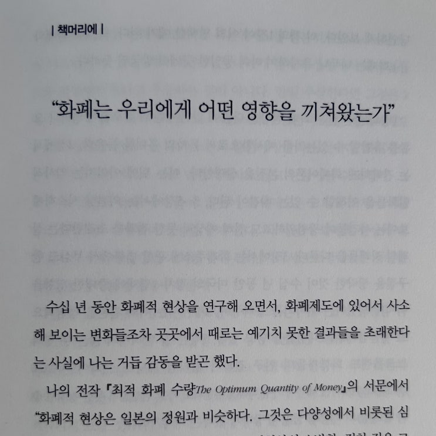
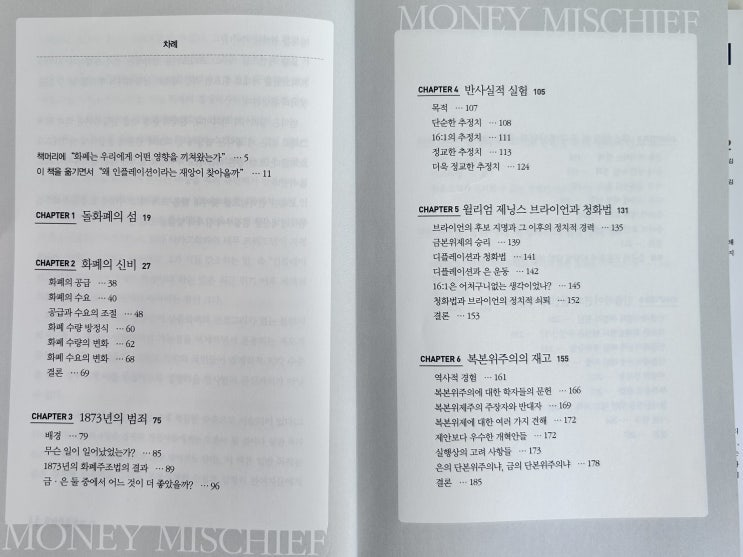
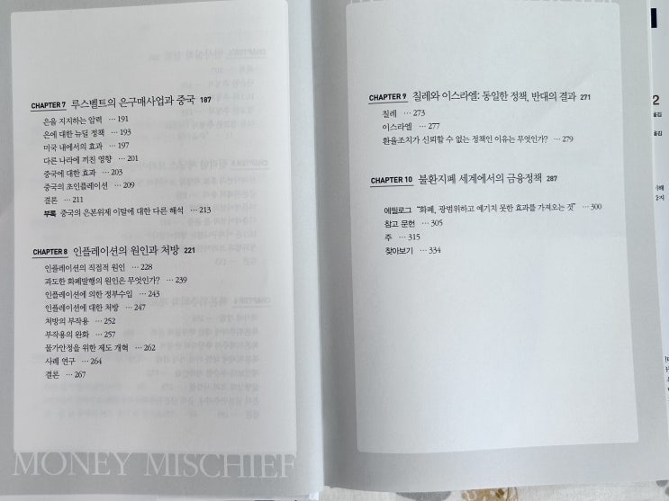

일단 이 책이 제목이 '화폐경제학' 인데 사실 이 책 내용이 제목과는 쪼금 다르다 라는 걸 미리 말씀드립니다. 제목은 한국의 독자들을 낚아 볼려는 생각으로 지은 것 같습니다.
실제 제목은 'Money Mischief : Episodes in Monetary History' 로 한국어로 꼭 번역한다면 '화폐의 폐해(장난질) : 돈의 역사에 있었던 이야기들' 정도가됩니다.
많은 다른 서적들과 같이 이 책도 책 머리에 작가분인 밀턴 프리드먼이 이 책을 통해서 무슨 이야기를 하고 싶었는지 밝힙니다. 그가 밝힌 내용은 다음과 같습니다.
화폐는 우리에게 어떤 영향을 끼쳐왔는가 밀턴 프리드먼 (노벨 경제학상 수상자)

이 책은 이러한 물음을 기본으로 하여 근대 화폐 역사중 중요한 사건이었던 복본위제와 금 본위제의 경쟁 및 그 중간 중간 불쑥 불쑥 등장하는 불태환화폐 제도(일명 fiat money system)에 대해서 이야기합니다.
내용중에서도 대부분의 내용은 복본위제에 대한 역사적 흐름 및 이것이 사람들의 삶에 미친 영향에 대해서 기술하고 있고 정작 인플레이션 관련 내용은 (그 내용이 참 좋지만) 몇 장 되지도 않기 때문에 책 제목을 좀 더 직관적인 '금은 복본위제의 역사' 정도로 하면 어땠을까 하는 아쉬움이 있습니다.
참고로 책 목차는 아래와 같습니다.


책은 (4장을 제외하고는) 대부분 역사적 사건을 서술하는 형식을 띄고 있기 때문에 그 표지의 압박감과는 다르게 생각보 다 술술 넘어갑니다.
왜 금은 복본위제가 자리잡게 되었는지, (미국에서) 복 본위제의 폐지가 사회적으로 어떤 변화를 불러 일으켰는지, 이로 인한 사회적인 움직임은 어쨌는지 하나 하나 읽다 보면 재미있습니다.
지금이야 우리는 불태환 화폐 제도에서 살고 있기 때문에 금본위제나 복본위제에 대해서 솔직히 말해 그 때의 삶이 어땠을 지 이해할 수 없지만, 이 책은 간접적으로나마 내가 금속 화폐를 쓰던 시절의 경험을 할 수 있게 해줍니다.
재미있었던 포인트는 '금' 에 밀려난 '은'의 지위를 찾기 위한 사회적 노력 부분이었는데, '은'을 지지한 정치인들이 '금'으로 인한 디플레이션으로 고통받는 '농부' 들의 지지를 받아 전성기를 맞이하였던 이야기입니다.
당시 사람들은 '금' 본위제가 '금'을 가지고 있는 소수의 금융계 세력의 농간이라고 생각했다고 하네요. 자기가 빚을지고 농산물을 열심히 생산하고 있는데, 그 농산물의 가격이 디플레이션으로 해마다 떨어지니 (그 만큼 빚의 가치가 늘어나는 것) 그렇게 빡칠 만도 하다는 생각이 들었습니다.
지금의 불태환지폐의 시대에서 많은 노동자들이 자신이 가진 구매력이 인플레이션으로 인해 사라지는 것을 불평하는 것과 반대로 과거에는 디플레이션으로 인해 인플레이션을 일으킬 '은'을 지지하는 것이 상당한 세력이었다는게 놀라웠습니다.
이 책에서 금은 복본위제 관련 역사를 제외하면 좋았던 부분은 인플에이션에 대한 설명입니다. 챕터 2 '화폐의 신비' 에서는 일반인들도 이해하기 쉽게 인플레이션이 일어나는 이유에 대해 헬리콥터 머니라는 직관적인 예시를 통해 잘 설명해주고 있고, 챕터 8 '인플레이션의 원인과 처방' 에서 다시한번 인플레이션에 대해서 심도있게 다룹니다. 이 챕터에서는 왜 정부가 부작용이 있는 것을 잘 알고 있음에도 사회적 생산력의 증가 없이 단순히 화폐를 늘림으로 인해 얻는 인플레이션에 중독되는지 잘 설명되어 있습니다.
이 책이 씌여진게 90년대 초였는데 30년이 넘게 흐른 지금도 그 때와 크게 다르지 않은 정부의 모습을 보면 '고전은 언제 읽어도 통한다'는 말이 맞다는 생각이 듭니다.
다음은 책을 읽으면서 좋았던 문구들을 정리한 것들입니다.
좋은 내용이 많아서 좀 분량이 있습니다. 바쁘신 분들은 건너 뛰셔도됩니다.
끝.
내가 아는 한, 나폴레옹전쟁 이외의 어떤 다른 대전쟁도 화폐의 가치 절하(초기에는 화폐 훼손, 주화의 명목가치 변경, 기타 유사한 편법들, 최근 수 세기 동안에는 정화지불 정지와 불환지폐 발행) 없이 수행된 적이 없었다.
챕터 6, p165 지폐의 명목량은 무시할 만한 비용으로 거의 무제한 증발될 수 있다.
왜냐하면 같은 종잇조각에 큰 숫자를 인쇄하기만 하면 되기 때문 이다.
『중국의 화폐와 신용 Money and Credit in China』(이 책의 부제는 짧은 역사 A Short History' 이지만 2천 년이상의 기간을 다룬다)의 저자 양 린생xang Liensheng에 의하면, 역사상 최초로 기록된 "진정한 화폐는 11세기 초무 렵에 중국의 스촨 지방에서 등장했다"(1952, p.52), 이 화폐는 1세 기 이상 통용되었으나 -양의 서술에 따르면- 결국에는 "주로 군사적 지 출을 충당하기 위해" 과잉 발행의 치명적 유혹에 빠져버렸다. 그는 또 그 다음 5세기 동안에 중국의 여러 지역 및 여러 왕조에서 발행한 많은 지폐에 관해서도 기록했는데, 모두가 처음에는 안정기를 거쳐 약간의 과잉 발행, 그 다음에는 상당한 과잉 발행, 그리고 드디어 폐기되는 동일 한 주기를 밟았다.
그후 19세기까지 중국에서는 더 이상의 지폐 남발 기록이 없다.
챕터 8, p225 우리가 구매하는 상품의 가격이 하락하거나, 적어도 가격인상을 멈추는 것을 좋아한다는 것은 당연하다. 그러나 우리는 우리가 판매하는 상품(생산하는 재화, 노동 용역 또는 소유하는 주택, 기타 자산)의 가격이 상승하면 좋아한다.
3장과 5장에서 살펴보았듯이, 인플레이션의 열망이 대중인기주의자들을 열광시키고 은의 자유화 지지 운동을 일으킨 적도 있다.
농부들이 인플레이션에 대해 불만을 토로하면서도 정작 자기네 생산물이 서는 가격인 상을 요구하는 시위를 워싱턴에서 벌인 적이 있다.
대다수의 우리도 이런저런 방법으로 같은 행동을 한다. 바로 이 때문에 우리의 인플레이션 난장판이 1960년대 초부터 1980년대 초까지 그렇게 오랫동안 계속되었고 지금도 계속 위협으로 남아 있다.
인플레이션이 대단한 파괴력을 발휘하는 하나의 이유는 이것이 발생 할 경우 이익을 얻는 편과 손해를 보는 편이 생겨 사회가 승자와 패자로 양분되기 때문이다. 승자들은 자기에게 돌아오는 이익을 자신의 통찰 력, 신중, 창의성 덕분에 생긴 당연한 결과라고 간주한다. 그들은 상품의 가격상승과 같은 나쁜 일은 통제할 수 없는 요인 탓으로 간주한다. 우리 들의 대부분은 인플레이션을 반대한다고 생각할 것이다.
그러나 우리의 진정한 본심은 인플레이션이 우리에게 미치는 나쁜 영향에 대해서만 반대하는 것이다.
챕터 8, p250 때때로 물가 및 임금의 규제가 인플레이션의 처방책으로 제안된다.
그러나 최근에 이러한 규제조치들이 인플레이션의 처방이 될 수 없다는 것이 명백해짐에 따라 이제는 그것들이 처방의 부작용을 완화시킬 수 있는 수단으로 주장되고 있다. 이러한 주장에 따르면 정부가 인플레이션 억제에 진지하다는 것을 국민에게 보여주고, 이를 통해 장기계약 내 용 속에 포함되는 미래의 인플레이션율에 대한 예상을 낮춤으로써 효과를 발휘할 수 있다.
그러나 물가 및 임금규제는 이러한 목적에 역효과를 준다. 이러한 규제조치들은 가격구조를 왜곡시켜 경제체계의 효율성을 감소 시킨다. 결과적으로 나타나는 산출량 감소는 인플레이션 처방에 따른 불리한 부작용을 감소시 키기는커녕 오히려 증가시킨다.
물가 및 임금규제는 노동력의 낭비를 초래하는데, 그 이유는 가격구조가 왜곡되고 규제조치를 수 립 • 집행 • 회피하는 데 막대한 노동력이 소모된다는 것이다. 이러한 부작용은 규제가 강제 적이건, 자발적이건 마찬가지로 나타난다.
실제에 있어서 물가 및 임금규제는 거의 항상 긴축재정 •금융정책의 보완수단이기보다는 대체수단으로 이용되 어왔다. 이러한 경험에 비추어 시장 참가자들은 물가 및 임금규제의 시행을 인플레이션율의 하락이 아니라 상승의 신호로 받아들이게 되었다. 이에 따라 예상 인플레이션 이 수그러들기보다 오히려 부풀어오르게 되었다.
물가 및 임금의 규제는 시행 직후 단기간 유효하게 보이는 수가 있다.
규제조치 시행 직후에는 생산품목의 질 낮추기, 서비스 없애기, 노동자 직급 올리기 등과 같은 가격 및 임금인상의 간접 수단들이 많기 때문에 물가지수에 들어가는 가격, 즉 정가는 낮게 유지된다.
그러나 시간이 지나면서 이러한 쉬운 규제회피 수단들이 다 동나고, 왜곡이 누적되고, 규제에 눌린 압력이 폭발점에 이르면 역효과가 점차 악화되고 규제프로그 램이 실패한다. 그 최종적 결과는 인플레이션의 상승이다.
지난 4세기의 경험을 돌이켜보 면, 물가 및 임금규제가 반복적으로 이용된 까닭을 설명하는 것은 정치인과 유권자들이 생각하는 기간이 짧다는 것, 오직 그 것 하나밖에 있을 수 없다(Schuettinger and Butler, 1979).
챕터 8, p261 8장에서 지적했듯이, 인플레이션은 세 가지 방법으로 재원을 제공한다. 첫째, 정부의 화폐발행은 본원통화 보유에 대한 암묵적인 인플레이션 조세로 된다.
둘째, 인플레이션은 소득세 과표 구성요소의 적어도 일 부 또는 소득 세 계층을 인플레이션에 대해 조정하지 못하는 결과로 명시적 조세의 증가를 초래할 수 있다.
셋째, 인플레이션은 장래의 인플레이션을 충분히 감안하지 못한 이자율로 발행된 부채잔액의 실질가치를 감소시킨다.
챕터 10, p294 인플레이션에 의한 재정수입 확보의 두 번째 방법인 소득계층의 승급은 첫 번째 방법보다 훨씬 중요한 작용을 했을 것으로 보인다. 이는 최근 수십 년 동안 미국의 경우에 있어서 확실히 그러했다.
인플레이션 때문에 저소득 계층이나 중간소득 계층의 사람들에게 투표기회가 주어졌더 라면 도저히 찬성표를 얻을 수 없을 정도로 높은 세율의 개인소득세가 부과되었다.
이 같은 소득계층 승급의 결과로 개인소득세에 물가연동제를 도입하도록 정치 적 압력이 가해졌으며, 이는 이 같은 방법을 통한 재 정수입의 전부는 아닐지라도 그 대부분을 소멸시켰다. 다른 나라의 사정은 잘 모르지만, 상당한 인플레이션이 발생한 나라에서는 반드시 개인세 구조가 상당한 정도로 물가 연동화 되었으리라는 것이 나의 의견이다.
챕터 10, p295 아조씨의 생각 추가 : 한국은 밀턴프리드만 형님이 말씀하신 것 처럼 이렇게 물가연동화 되지 않았다.
덕분에 연봉이 1억을 넘어도 세율 존나 처맞으면서 먹고살기 힘든 상황임. 한국 정부는 노골적으로 2번 지랄을 통해 노동 자들을 수탈 하고 있음.
결론
화폐 현상은 수세기 동안 철저한 연구의 대상이 되어왔다. 이러한 연구로부터 얻은 몇 가지 경험적 발견을 요약 해보자.
1) 장기와 단기를 막론하고, 화폐 수량 증가율과 명목소득 증가율 사이에는 정확하지는 않지만 일관된 관계가 존재한다. 만일 화폐 수량이 급속히 증가하면 명목소득도 급속히 증가되고 반대의 경우에 도 마찬가지이다. 그리고이 같은 관계는 단기보다는 장기에 더욱 밀접 하다.
2) 단기에 있어서는 화폐 증가와 명목소득 증가 사이의 관계를 파악하 기는 때때로 곤란하다. 그 부분적 이유는
장기보다는 단기에 있어서 이들의 관계가 덜 밀접하다는 점이고, 상당한 이유는 통화 증가 의 변화가 소득에 영향을 미치는 것에는 시간이 소요된다는 점이다. 그리고 얼마나 오랜 시간이 걸릴 지 그 자체가 가변적이기도 하다. 오늘의 소득 증가는 오늘의 통화 증가와 밀접하게 연관되어 있지 않고, 이는 이제까지 화폐에 일어났던 변화에 달려 있다.
오늘 화폐에 일어나는 일은 미래의 소득에 일어나게 될 일에 영향을 미친다.
3) 대부분의 주요 서구 국가들에 있어서 화폐증가율의 변화는 약 6~9 개월 후에 명목소득 증가율의 변화를 일
으킨다. 그러나 이는 평균 적인 것으로서 어느 경우에나 반드시 적용되는 것은 아니다. 때때로 지체 기간이 더길게도, 짧게도 된다. 특히 화폐증가율과 인플레이션율이 높고 가변적인 상황에서는 지체 기간이 단축되는 경향이 있다.
4) 경기순환 경험 사례에 있어서 시간의 지체를 감안할 때에는 명목소득의 반응은 통화 증가보다 진폭이 더 크
다.
5) 명목소득 증가율 변화는 전형적으로 처음에는 산출량에 나타나고 물가에는 거의 나타나지 않는다. 만일 화폐
증가율이 증가하거나 감소한다면, 명목소득 증가율과 아울러 실물생산의 증가율도 약 6~9 개월 뒤에 증가하거나 감소한다. 그러나 물가상승률은 거의 영향을 받지 않는다.
6) 소득효과나 생산효과와 마찬가지로 물가효과는 시간에 걸쳐서 나타난다. 이는 약 12~18개월 뒤에 나타나기
때문에 화폐증가율의 변화와 인플레이션율의 변화 사이에 총 지체기간이 평균적으로 2 년 정도가 된다. 바로 이때문에 일단 인플레이션이 시작된 다음 그 것을 중단시키는 것은 사래 긴 밭을 갈듯이 어려운 일이다.
인플레이 션은 결코 당장 멈출 수 있는 것이 아니다.
7) 화폐증가율 효과의 지체를 감안하더라도 그 관계는 결코 완전하지 못하다. 화폐 변화와 소득 변화 사이에 하
고 많은 단기적 문제들이 내재되어 있는 법이다.
8) 3~10년 정도까지 길어질 수도 있는 단기에는 화폐 변화가 주로 생산에 영향을 미친다. 반면에, 수십 년에 걸
쳐서 화폐증가율은 주로 물가에 영향을 미친다. 생산효과는 사람들의 독창성 및 근면성, 절약의 정도, 기업의 상황, 산업구조 및 정부 조직 그리고 국제관계등의 실물적인 요인들에 의존한다.
한 가지 중요한 발견은, 극심한 불경기에 관한 것이다.
화폐 수량의 대폭적 감소를 포함하는 화폐 위기가 심한 불경기의 필요충분조건 이라는 강력한 증거가 있다. 화폐 증가의 변동 역시 가벼운 경제변동과 구조적으로 관련 되어 있으나, 다른 요소들만큼 지배적인 역할을 하는 것은 아니다.
애너슈워츠와 내가 설명했듯이, 화폐 수량의 변화는 화폐소득의 변화와 물가 변화의 독립적 원인일 뿐만 아니라 결과이기도 하다.
그러나 일단 화폐 수량 변화가 발생한 다음에는 소득과 물가에 다시 영향을 미친다. 즉 이들은 상호작용을 하지만 장기적 변동과 급격한 순환적 변동에 있어서 화폐는 화폐소득과 물 가에 명백히 '주도적 동반자' 이며, 단기적 변동과 완만한 순환적 변동에 있어서 화폐는 화폐소득과 물가에 대등한 동반자'이다.
이것이 우리의 증거가 제시하는 일반적 결론이다 (1963, p.695).
10) 아직도 끝나지 않은 주요 이슈 중의 한 가지는, 단기에 있어서 명목소득 변화가 생산과 물가 사이에 어떻게
나누어지느냐 하는 것이다. 이러한 분할은 공간과 시간에 따라 크게 차이를 보여왔으며, 그 가변성의 원인이 되는 요소들을 낱낱이 밝혀주는 만족스러운 이론이 아직까지 존재하지 않는다.
11) 이상의 명제들로부터 얻을 수 있는 당연한 귀결로서, 우리는 인플 레이션이 생산의 증가보다 더 급속한 화
폐 수량의 증가에 의해서만 발생하며, 발생될 수 있다는 의미에서 "인플레이션은 언제 어디서나 화폐적 현상이 다"라고 말할 수 있다. 많은 현상들이 인플 레이션율의 일시적 변동을 발생시킬 수 있으나 오직 통화증가율 에영향을 미치는 한에서만 지속적인 효과를 가질 수 있다. 그러나 화폐팽창 요인으로서 가능한 것들이 많다. 여기 에는 금의 발견, 정부지출 재원조달 그리고 민간지출 재원도달이 포함된다. 이상의 명제들은 인플레이션의 원인과 처방에 대한 해답의 시작에 불과하다. 보다 깊이 있는 질문은 왜 과도한 화폐팽창이 일어나는 가를 묻는 것이 다(8장 참조).
12) 화폐 증가의 변화가 이자율에 미치는 영향은 처음의 방향과 나중 의 방향이 다르게 나타난다. 화폐 증가의
가속화는 처음에는 이자율을 인하하는 방향으로 나타난다. 그러나 그 후 이에 따라 지출이 가속되고, 다시 그 다음 인플레이션이 가속됨에 따라 대출수요가 증대되고, 이것은 이자율을 인상하는 경향을 나타낸다.
이에 더하여 인플레이션의 고도화는 실질이자율과 명목이자율의 차이를 확대한다. 대출자와 차용자 모두 인플 레이션을 예상함에 따라, 예상 인플레이션을 상쇄하기 위해 대부자는 높은 명목이자 율을 요구하고 차용자도 이를 기꺼이 받아들이려 할 것이다. 바로 이 때문에 브라질, 칠레, 이스라엘, 한국과 같이 화폐 수량과 물가 의 급격한 상승을 경험한 나라에서 이자율이 높다. 반대 방향으로 는, 화폐증가율의 둔화는 처음에는 이자율을 상승 시키지만 그 후 에는 지출과 인플레이션을 감속시킴에 따라 이자율을 하락하게 한다. 바로 그 때문에 스위스, 독일, 일본과 같이 가장 낮은 화폐 증가율을 경험한 나라에서 이자율이 낮다.
13) 주요 서구 국가들에서 금과 연결고리를 둔 화폐제도와 이러한 화폐제도에서의 물가의 장기예측 가능성은 2
차대전 얼마 이후까지는 마치 물가안정이 예상되고 인플레이션도 디플레이션도 예상되지 않은 경우에서처럼 이자율 움직임이 나타났다. 명목자산에 대한 명목수익은 상대적으로 안정적인 반면에, 실질수익은 대단히 불안정 적이어서 인플레이션과 디플레이션을 거의 완전하게 흡수 했다.
13) 1960년대부터 특히, 1971년 브레튼우즈체제의 붕괴 이후에는 이자율과 인플레이션율은 평행하게 움직이
기 시작했다. 명목자산에 대한 명목수익의 가변성은 커지고 명목자산에 대한 실질수익의 가변성은 작아졌다.
챕터2 '화폐의 신비' 결론 부분 아마 가장 중요하고 철저하게 기록되었음에도 불구하고 완강하게 저항받고 있는 하나의 명제는 "인플레이션은 언제 어디서나 화폐적 현상 이다” 라는 것이다. 이 명제는 수천 년은 아닐지라도 수백 년 동안 학 자들과 실무자들이 알고 있었다. 그러나 이 명제에도 불구하고 정부 당 국은 화폐가치의 변조 -국민의 참여 없는 조세- 에 의해 국민을 수탈하 고자 하는 유혹에 빠지는 것을 막지 못했다. 그러면서 정부는 자기네가 결코 그런 짓을 하고 있지 않다고 완강히 부인하면서 인플레이션에 대해서는 온갖 다른 나쁜 요인을 둘러댔다.
에필로그 중우리가 다루어 온 화폐의 분야에서, 예를 들면 당신은 한 개인으로서 부의 한도 내에서 원하는 만큼 얼마든지 현금을 가질 수 있다.
그러나 만일 화폐를 본원통화로 정의한다면 중앙은행(연준)에 의해 -보다 넓게 화폐를 정의한다면 중앙은행과 은행들에 의해- 주로 결정되어 어느 시점에서나 한 사회의 화폐량은 고정되어 있다. 어느 한사람이 화폐 보유를 줄이려고 해야만 당신이 화폐 보유를 늘릴 수 있다.
한 개인의 입장에서는 그 궁극적인 원천이 자신의 생산성 향상에 있든지 정부의 통화발행에 있든지 소득증가는 좋은 상황이다. 그러나 사회 전체의 입장에서는 두 가지 원천은 매우 다르다. 2장에 소개한 헬리 콥터 우화에서처럼 생산성 향상은 축복이며, 통화증발은 저주가 될 수 도 있다.
개인들이 개인적 경험을 일반화하는 것, 개인들에게 사실인 것이 사회 전체에 대해서도 사실이라고 믿는 것은 자연스럽다. 그러나 방금 위의 예에서처럼 주제가 화폐이든 다른 경제 · 사회적 현상이든 대단히 널리 유포된 경제적 오류의 근저에 이러한 혼돈이 자리잡고 있다.
에필로그 중아조씨의 생각 추가 : 마지막 한 줄이 핵심임. 밀턴 형님 몽둥이좀 휘두를 줄 아시네. ㅎㅎ
보너스 : 책머리에 중간에 보면 이런 말이 나온다.
"(...) 이는 역사적으로 돌에서부터 깃털, 담배, 조가비, 구리, 은, 금, 종잇조각 그리고 회계장부의 항목에 이르기까지 수많은 형태를 취했다. 그러면 미래의 화폐는 어떤 형태를 가지게 될까?
과연 컴퓨터의 바이트byte 일까?"
아마 컴퓨터의 바이트가 될 것이다.
https://youtu.be/6suGcEQdcDo?si=p-5Lmoz7-QEAr3aQ